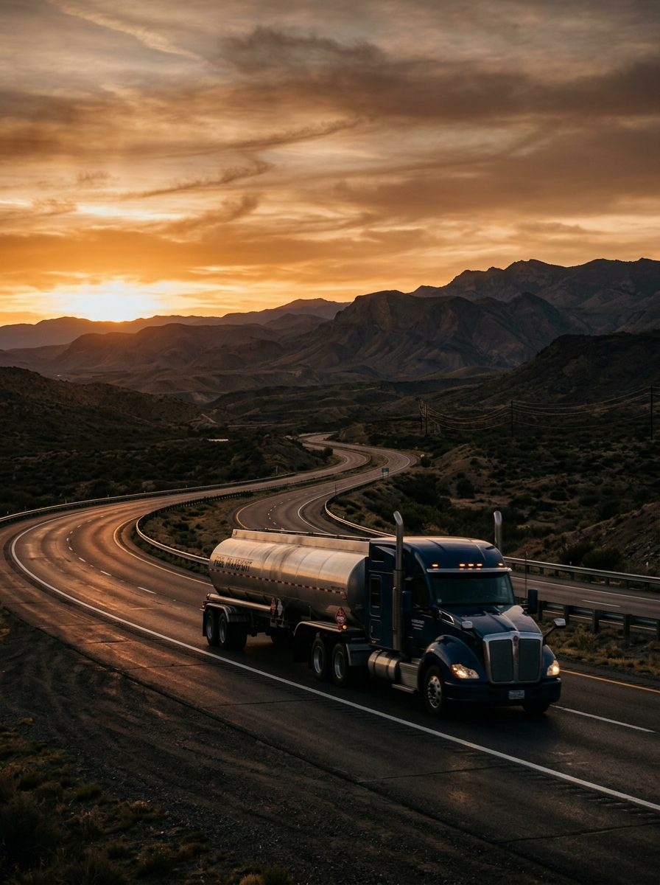
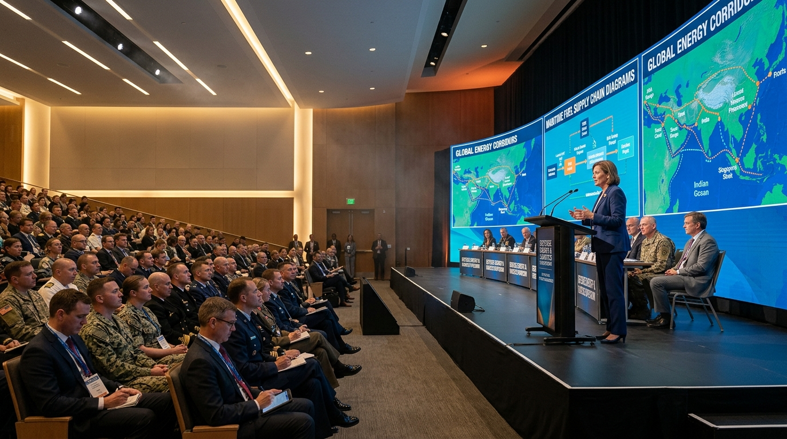
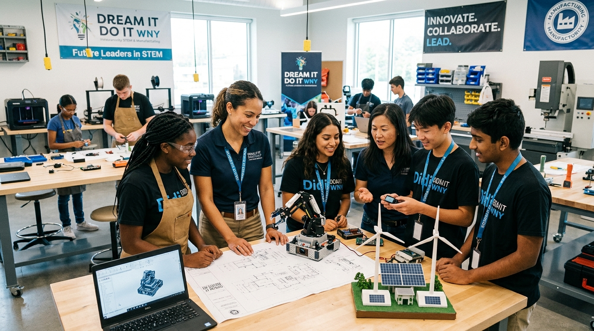

Founded in January 2020, Seque Infratech Inc emerged at a time of unprecedented global disruption. Launched on the cusp of the COVID-19 pandemic, our company began its journey amid uncertainty—yet with a clear vision: to become a trusted partner in delivering people, products, and technology solutions across diverse industries. Rooted in our core competencies of project management, procurement, and business collaboration, Seque Infratech has grown from a bold idea into a globally engaged enterprise.
Launched at the start of the COVID-19 pandemic, Seque Infratech responded to critical market needs by establishing itself as a reliable supplier of fuel oil, extending into the United Arab Emirates, Kuwait, and India through strategic global trade operations.
Earning the CAGE Code 8LH32 marked a pivotal milestone — recognition of our ability to meet rigorous standards for critical land and maritime goods. Engagements with the Defense Logistics Agency (DLA) opened doors to high-impact collaborations with major corporations.
Seque Infratech became a certified WOSB under the U.S. Small Business Administration, reflecting our commitment to diversity, innovation, and inclusive growth within the global supply ecosystem.
Seque Infratech has delivered petroleum and biodiesel fuel solutions to Barbados, supported by a strategic alliance with a trusted logistics transporter in Louisiana — a key DLA contractor ensuring seamless end-to-end supply chain operations.

We understand the critical nature of the industries we serve, and bring the full strength of our global partnerships, technical expertise, and proven processes to deliver on every promise. As we expand our reach, we remain focused on high-quality fuel solutions, logistical efficiency, and service that exceeds expectations.
FOUNDER & CHIEF EXECUTIVE OFFICER
With over two decades of leadership in procurement, infrastructure advisory, and global trade, Ms. Edwards brings both vision and depth to Seque Infratech Inc., building an organization focused on delivering agile, efficient, and forward-thinking solutions to complex business challenges.
Before founding Seque Infratech in 2020, she served as a Loan Officer at the U.S. Small Business Administration, helping drive small business growth through funding support. She later led Crumb Rubber Solutions Inc. as CEO, guiding it through successful recycling and export ventures while positioning it as a recognized Women, Minority, and Disadvantaged Business supplier.
At Seque Infratech, Ms. Edwards blends strategic insight with a strong belief in global collaboration and inclusive business practices — building a company that delivers high-quality fuel and infrastructure solutions while fostering trust, innovation, and resilience across markets.
"Leadership is not about size, but about clarity of purpose and strength of execution. At Seque Infratech, we believe that smaller, agile teams — driven by integrity and insight — can deliver world-class results."
— MS. IOLA EDWARDS, FOUNDER & CEOCHIEF FINANCIAL OFFICER
Overseeing financial strategy, capital allocation, contract compliance, and cross-border fiscal operations across commercial and defense procurement programs.
Ensures financial resilience and rigorous audit readiness for federal contracting, international logistics bonding, and high-volume commodity trade.
Active participation in defense logistics forums, workforce initiatives, and regional economic development.

DEFENSE PROCUREMENT · 2023High-level engagement with defense agencies, prime contractors, and global energy partners — presenting Seque Infratech's CAGE 8LH32 readiness, fuel capabilities, and multimodal supply chain logistics frameworks.

COMMUNITY & STEM · 2024Championing the next generation of infrastructure, logistics, and STEM leaders across Western New York, fostering industry collaboration and inclusive economic growth in our home community of Buffalo.